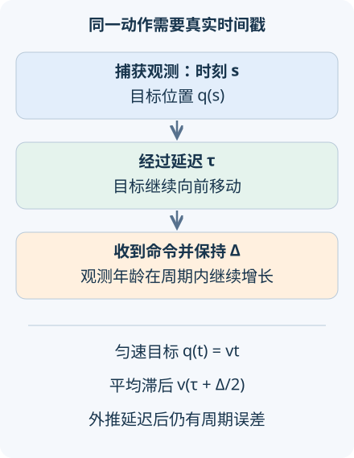

本讲目录
AI 研究 07 · 视觉语言动作模型：从看懂指令到按时执行
问题：模型理解“把杯子放到移动托盘上”，为何仍会在动作落下时错过目标？先修：模型预测规划、Flow Matching。资料核查截至 2026-09-08；实验只解析观测时序，不能据此声称机器人任务已被验证。
1. 三种输入输出，共用一条时间线
视觉语言动作模型简称 VLA。视觉说明当前场景，语言指定任务，机器人状态提供关节、末端位置等信息，输出则是一段具有物理含义的动作。动作可以是关节目标、末端位姿增量或控制信号；必须注明坐标系、单位、执行周期和控制接口。一个正确的文字回答与一个可以执行的动作序列，评价条件并不相同。
把动作块写为 \(A_t=(a_t,\ldots,a_{t+H-1})\)，策略为 \(\pi_\theta(A_t\mid o_t,s_t,\ell)\)。\(o_t\) 是观测，\(s_t\) 是机器人状态，\(\ell\) 是指令，\(H\) 是动作块长度。这里下标应对应捕获时刻或计划执行时刻，不能含混地都称作“当前”。相机曝光、图像传输、网络推断和执行器通信各占时间。
π0.5 官方研究，2025-04-22研究从异质数据中学习更开放环境下的机器人操作。模型可以采用语言视觉骨干与连续动作生成模块，动作生成不必等价于逐字输出文本。异质数据中的网页理解、机器人示范与动作监督，各自提供不同证据；照片本身通常不包含可直接执行的关节标签。

2. 一百毫秒究竟意味着什么
取最简单的运动目标 \(q(t)=vt\)，速度 \(v\ge0\)，单位 m/s。每隔 \(\Delta\) 秒捕获一次位置，固定延迟 \(\tau\) 秒后命令到达。先假定执行器能瞬时到达收到的位置，并在两次更新之间保持不动。这个理想化去掉了惯性，专门隔离观测变旧带来的误差。
在稳定更新阶段，时刻 \(t\ge\tau\) 最新到达的观测捕获于
于是 \(e(t)=q(t)-\hat q(t)=v[t-s(t)]\)。每个周期内，观测年龄从 \(\tau\) 增到接近 \(\tau+\Delta\)，随后收到新观测而跳回。即使模型完美识别图像中的位置，命令仍然系统性落后。
对均匀分布在一个更新周期内的相位 \(r\in[0,\Delta)\) 积分：
第一式来自 \(\mathbb Er=\Delta/2\)，第二式来自 \(\mathbb Er^2=\Delta^2/3\)。误差上确界为 \(v(\tau+\Delta)\)，在理想瞬时更新约定下未必恰好取到。延迟和更新周期是不同参数；提高吞吐量并不总是缩短单次响应延迟。
3. 外推能补偿什么，不能补偿什么
若速度已准确知道，可把捕获位置向前预测 \(\tau\) 秒，收到后执行 \(v[s(t)+\tau]\)。这抵消固定延迟，但仍会在周期内保持不变，因此剩余 RMS 为 \(v\Delta/\sqrt3\)。它没有创造连续更新，也没有解决目标加速、遮挡、速度估计偏差或执行器动态。
默认 \(v=0.5\) m/s、\(\tau=0.2\) s、\(\Delta=0.1\) s：平均滞后为 0.125 m，RMS 约 0.125831 m；只补偿已知延迟后 RMS 约 0.028868 m。仅考虑延迟的一步差为 0.1 m，而完整周期平均误差更大。这解释了为什么“只快一点”有时显著改变动态任务的结果。
真实控制往往不能瞬间跳到新位置。若直接切换两个不一致的动作块，位置、速度或加速度可能突变。简单把候选动作平均，还可能把两个各自可行的绕障策略平均成一条撞障路线；控制动作空间中的平均不保证任务语义和几何约束保持。
4. 动作块不是把延迟藏起来
动作分块让模型一次预测未来多个命令，执行旧块时可异步计算新块。关键在于，新结果到达时，旧块前面的一部分已经真实执行，无法回滚。新块必须与已承诺的前缀和当前实际状态兼容，同时对新观测保持反应能力。
Real-Time Action Chunking，2025-06-09将重叠动作的一致性组织为补全问题：冻结已确定会执行的部分，对重叠段与剩余段进行相应处理。原工作研究推断时方法；官方页面于 2025-12-08 链接了训练时版本。论文的真实机器人与模拟任务提供该协议下的证据，本讲匀速目标公式只解释其中一个时序动机，并非复现它的算法。
一个可核验的系统日志至少记录观察捕获、推断开始、推断完成、动作实际执行四种时间戳。还要区分动作块长度与重规划间隔：预测一秒动作，并不代表必须一秒后才能重新看。末端位姿采用相机坐标还是机器人底座坐标、增量是对哪一个状态定义，也会在延迟时改变解释。
5. 前沿的泛化声称要落到哪些条件
π0.7 官方研究，2026-04-16讨论可引导性与组合能力等方向。阅读公司研究报告时，应核对训练数据、指令修改方式、允许的人工反馈、机器人平台与测试任务，再判断它支持哪种泛化；某些新任务成功不等于任意物体、任意家居或任意延迟下都可用。
VLA 还会面对视觉混淆与行动代价不对称。识别错一个杯子可能只是分类误差，执行抓取却可能使后续状态完全不同。因此应分开测语言条件是否改变目标选择、动作是否满足接口约定、整段任务是否成功；不能只用离线动作均方误差替代闭环实验。
先把速度设为零，检查本模型的时序误差归零；再保持速度与延迟不变，仅提高更新频率。你会看到周期误差下降，却仍有固定延迟项。若把模型换成加速目标，应重新推导，不应继续沿用匀速公式。
6. 迁移练习
题一：两套模型每秒都完成十次推断，一套每次延迟 50 ms，另一套流水线延迟 300 ms。它们的动态控制表现必然相同吗？
展开答案
不必。吞吐量相同不代表观测年龄相同；目标在额外 250 ms 内会继续运动。还应检查流水线结果是否按时间顺序执行，过期动作是否丢弃，以及闭环重规划周期。
题二：对已有动作块做平滑后视频更流畅，能否据此判断任务更安全、更成功？
展开答案
不能。平滑会改变轨迹和接触时机，可能违反几何约束。需要在相同任务初始化下测量成功、碰撞、执行时间及人工干预，并检查控制接口的速度和加速度限制。
速查摘要
| 参数 | 意义 |
|---|---|
| \(\tau\) | 捕获到动作到达的固定延迟 |
| \(\Delta\) | 位置命令的更新周期 |
| 匀速保持误差 | \(\bar e=v(\tau+\Delta/2)\)；补偿延迟仍有周期误差 |